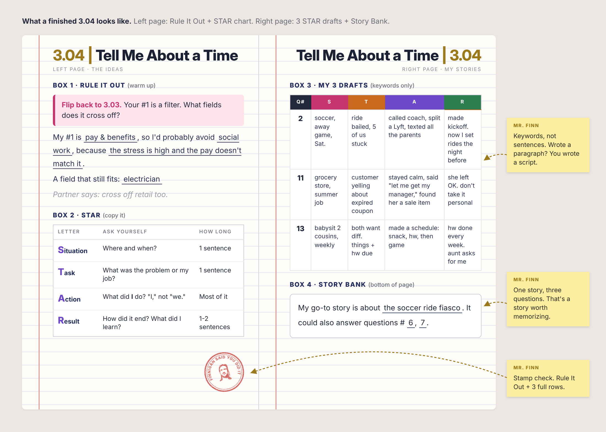

3.04 | Tell Me About a Time
Purpose
Thursday you ranked what matters to you in a job.
Today your #1 becomes a filter that crosses careers off the list.
Then you'll learn STAR, the move behind every good "tell me about a time" answer.
Then you'll draft 3 answers to say out loud next class.
What a Finished Notebook Looks Like
Click the image to see it full size.

I. Rule It Out
Flip back to 3.03. Find your #1.
Your top priority quietly eliminates whole fields. If work-life balance is your #1, teaching might be a rough fit. The grading pile follows you home every weekend like a stray cat.
A field that still fits: .
Turn and talk: Share yours. Your partner names one more job you should cross off.
Need ideas? nurse · electrician · lawyer · chef · police officer · software engineer · teacher · real estate agent · truck driver · small business owner
Mr. Finn's My #1 is creative control, so I'd steer clear of jobs that run off a script, like call centers or managing a fast food franchise, because someone else already decided every move. Teaching still fits, as long as nobody hands me a scripted curriculum.
II. STAR
Interviewers love "Tell me about a time..." questions. Their logic: how you handled it before is how you'll handle it on their payroll.
Copy this
| Letter | Ask yourself | How long |
|---|---|---|
| Situation | Where and when? | 1 sentence |
| Task | What was the problem or my job? | 1 sentence |
| Action | What did I do? Say "I," not "we." | Most of it |
| Result | How did it end? What did I learn? | 1-2 sentences |
Q: Tell me about a time you handled pressure.
(The interviewer heard nothing.)
S Last summer I worked the register at my uncle's taco truck.
T The card reader died in the middle of the lunch rush, with 15 people in line.
A I taped up a cash-only sign, pointed people to the ATM across the street, and wrote orders on paper so nobody got skipped.
R We kept almost the whole line. Now I always ask, "What's the backup plan?" before a busy shift.
III. Draft Your Answers
- Read the questions and the advice. Star 3 you have a real story for.
- Tell a partner which stories you picked (2 min). Out loud first, pen second.
- Draft each one in the table. Keywords only, no full sentences. You're building a memory, not a script.
Stories can come from anywhere: school, sports, family, friends, a job, a group project.
The 15 Questions (and how to answer them)
Interviewers aren't grading a perfect answer. They want to know how you think and whether you'd fit.
2-12 start with "Tell me about a time..."
The classics
The best answers don't sound rehearsed. They sound like a clear story with real details.
Draft table
| Q # | S | T | A | R |
|---|---|---|---|---|
Example row: Q7 · taco truck, lunch rush · card reader died, 15 in line · cash sign, ATM, paper orders · kept the line, always have a backup
IV. Story Bank
One good story can answer a bunch of questions.
Success Looks Like
- Rule It Out sentences done
- STAR chart copied
- 3 drafts, every box filled
- Story Bank sentence filled in